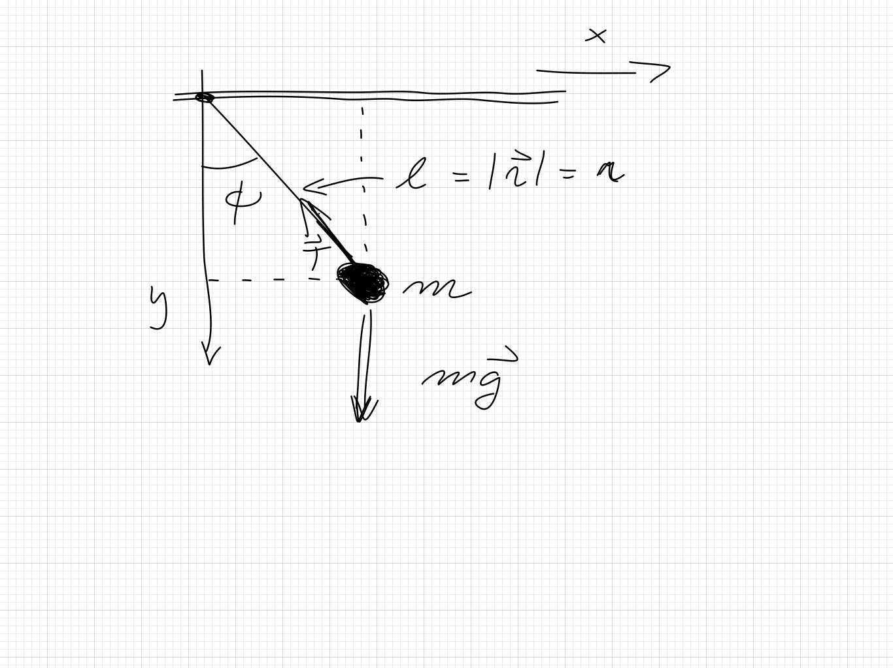

This homework is optional but gives an extra score of 10% on top of all you have done throughout the semester. The exercises are essentially good old fashioned paper and pencil exercises and each covers different aspects of what has been done after spring break. The relevant reading background is marked in the different exercises (Taylor's text).
Show that if one transforms to a reference frame where the total momentum is zero, \( \boldsymbol{p}_1=-\boldsymbol{p}_2 \), that the relative momentum \( \boldsymbol{q} \) corresponds to either \( \boldsymbol{p}_1 \) or \( -\boldsymbol{p}_2 \). This means that in this frame the magnitude of \( \boldsymbol{q} \) is one half the magnitude of \( \boldsymbol{p}_1-\boldsymbol{p}_2 \).
Given the center of mass and relative coordinates \( \boldsymbol{R} \) and \( \boldsymbol{r} \), respectively, for particles of mass \( m_1 \) and \( m_2 \), find the coordinates \( \boldsymbol{r}_1 \) and \( \boldsymbol{r}_2 \) in terms of the masses, \( \boldsymbol{R} \) and \( \boldsymbol{r} \).
Consider a particle of mass \( m \) moving in a potential
$$
V(r)=\alpha\ln(r/\alpha),
$$
where \( \alpha \) is a constant.
Consider a mass \( m \) connected to a spring with spring constant \( k \). Rather than being fixed, the other end of the spring oscillates with frequency \( \omega \) and amplitude \( A \). For a generalized coordinate, use the displacement of the mass from its relaxed position and call it \( y=x-\ell-A\cos\omega t \). In this system the potential energy of the spring is \( ky^2/2 \).
A mathematical pendulum consists of a point mass \( m \) suspended by a massless thread/rod of length \( l \) in a gravitational field, as shown in the figure here. The constraining force is labeled by \( \boldsymbol{T} \) and the gravitational force is labeled \( \boldsymbol{F}_g \).

We assume that the length \( l \) is constant and we define the coordinates involved as
$$
\boldsymbol{r} = l\sin(\phi)\boldsymbol{\hat{x}}+l\cos(\phi)\boldsymbol{\hat{y}},
$$
where \( \boldsymbol{\hat{x}} \) and \( \boldsymbol{\hat{y}} \) are the unit vectors in the \( x \) and \( y \) directions, respectively.
The equation for \( \phi \) is a second-order differential equation
$$
\ddot{\phi}(t)=-\omega_0^2\sin{(\phi(t))}.
$$
This equation can be solved analytically if we assume that the angle \( \phi \) is very small. Then we can approximate our equation as
$$
\ddot{\phi}(t)=-\omega_0^2\phi(t).
$$
The following gives you an opportunity to earn five extra credit points on each of the remaining homeworks and ten extra credit points on the midterms and finals. This assignment also covers an aspect of the scientific process that is not taught in most undergraduate programs: scientific writing. Writing scientific reports is how scientist communicate their results to the rest of the field. Knowing how to assemble a well written scientific report will greatly benefit you in you upper level classes, in graduate school, and in the work place.
The full information on extra credits is found at https://github.com/mhjensen/Physics321/blob/master/doc/Homeworks/ExtraCredits/. There you will also find examples on how to write a scientific article. Below you can also find a description on how to gain extra credits by attending scientific talks.
This assignment allows you to gain extra credit points by practicing your scientific writing. For each of the remaining homeworks you can submit the specified section of a scientific report (written about the numerical aspect of the homework) for five extra credit points on the assignment. For the two midterms and the final, submitting a full scientific report covering the numerical analysis problem will be worth ten extra points. For credit the grader must be able to tell that you put effort into the assignment (i.e. well written, well formatted, etc.). If you are unfamiliar with writing scientific reports, see the information here
The following table explains what aspect of a scientific report is due with which homework. You can submit the assignment in any format you like, in the same document as your homework, or in a different one. Remember to cite any external references you use and include a reference list. There are no length requirements, but make sure what you turn in is complete and through. If you have any questions, please contact Julie Butler at butler@frib.msu.edu.
| HW/Project | Due Date | Extra Credit Assignment |
|---|---|---|
| HW 3 | 2-8 | Abstract |
| HW 4 | 2-15 | Introduction |
| HW 5 | 2-22 | Methods |
| HW 6 | 3-1 | Results and Discussion |
| Midterm 1 | 3-12 | Full Written Report |
| HW 7 | 3-22 | Abstract |
| HW 8 | 3-29 | Introduction |
| HW 9 | 4-5 | Results and Discussion |
| Midterm 2 | 4-16 | Full Written Report |
| HW 10 | 4-26 | Abstract |
| Final | 4-30 | Full Written Report |
You can also gain extra credits if you attend scientific talks. This is described here.
This opportunity will allow you to earn up to 5 extra credit points on a Homework per week. These points can push you above 100% or help make up for missed exercises. In order to earn all points you must:
Approved talks: Talks given by researchers through the following clubs:
If you have any questions please consult Jeremy Rebenstock, rebensto@msu.edu.
All the material on extra credits is at https://github.com/mhjensen/Physics321/blob/master/doc/Homeworks/ExtraCredits/.